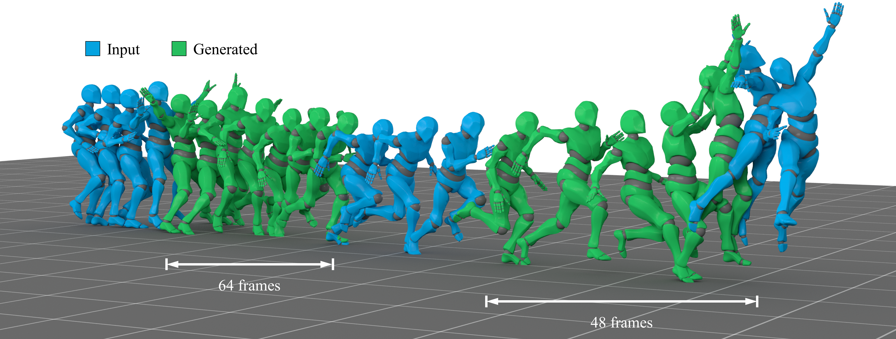
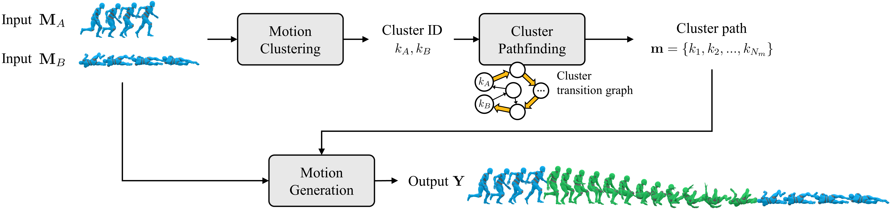

Length-varying Neural Motion Stitching via Cluster Transition Graph
Abstract
Motion stitching aims to create new character animations by seamlessly combining existing motion sequences. Existing approaches often require manual selection of transition range or assume fixed transition length, restricting the types of motions that can be connected. To broaden the diversity of motions that can be synthesized, it is essential to generate transitions of varying lengths, allowing the character sufficient time to adapt its pose when the input motions differ significantly.

To this end, we propose a length-varying neural motion stitching method based on a cluster transition graph, which produces naturally connected motion sequences given two distinct input motions. Our framework consists of three stages: motion clustering, cluster pathfinding, and motion generation. First, motion clustering maps input motions to discrete clusters. Next, we identify the corresponding clusters in the cluster transition graph and search for a connecting path. In this graph, nodes represent motion clusters, and directed edges indicate valid transitions between them. The resulting path determines both the transition length and a guide sequence that informs motion generation. Finally, the path and input motions are provided to a Transformer encoder-based motion generator to produce the final transition poses. Experimental results demonstrate that our method adaptively adjusts the motion length and successfully generates plausible transitions between distinct motions, such as crawling, basketball shooting, and slow locomotion. We also show that using a graph structure effectively estimates transition durations and produces high-fidelity results compared to methods that assume a fixed transition length, or directly compute the time.
Method Overview

Motion Stitching Results
Motion stitching results on distinct motions.
Stitching motions with different foot phases. The first input motion is identical in both test cases.
Our method generates additional step to create natural transition.
Comparison between results from motion block and single-pose inputs.
When given input clips contain only a single pose, our method interprets them as stationary motions with zero root velocity.
Motion Stitching on Unseen Motions
Transition Direction Control
Given the same input motions, our method produces different motions based on given user control direction.